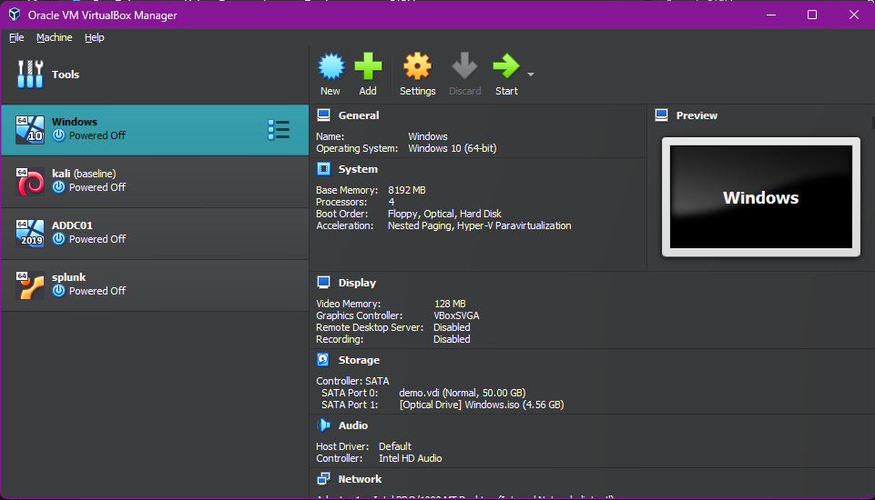

🛠 Home Lab Infrastructure
This log outlines how I setup the base infrastructure for my homelab. Using Oracle VirtualBox, I configured both a Windows 10 machine as the target and a Kali Linux VM as the attacker. As I continue to evolve my homelab, this environment will allow me to simulate real-world attack scenarios and develop a deeper understanding of network behavior, system vulnerabilities, and basic red team operations.
Installation and Setup
After installing and configuring Oracle VirtualBox, I proceeded to build my virtual lab environment by setting up both Windows 10 and Kali Linux virtual machines. I downloaded the official ISO image files from their respective sources and followed VirtualBox’s configuration steps to provision each VM. This setup serves as the foundation for simulating real-world cybersecurity scenarios in a controlled environment. Below is a snapshot of my home lab architecture as configured in VirtualBox, with the first two VMs being Windows 10 and Kali Linux respectively:
Network Configuration
With the Windows 10 and Kali Linux virtual machines successfully installed, the next step was to configure the internal network that would allow both systems to communicate with each other. This internal connectivity is essential for generating and analyzing telemetry in simulated attack scenarios.
I began by opening the VirtualBox settings for both VMs and configuring one of their network adapters to use the Internal Network mode. I assigned both VMs to the same internal network name, intnet, ensuring they were on the same virtual switch.
Once the adapter settings were in place, I assigned static IP addresses to both machines using the 172.16.0.0/24 subnet. On the Windows machine, I configured the network adapter manually through the GUI to use 172.16.0.3 with a subnet mask of 255.255.255.0. I verified the configuration by running the ipconfig command in Command Prompt.
On the Kali Linux machine, I opted to configure the interface manually via the terminal to reinforce my familiarity with CLI-based networking. I assigned the IP 172.16.0.2 to the appropriate interface using the ip addr add command, and confirmed the change with ip a.
To verify connectivity between the two systems, I used the ping command on each machine. Both machines were able to reach one another successfully, confirming that the internal network was functioning properly.
With connectivity established, the core infrastructure of the home lab was complete. This setup provides a reliable and controlled environment to simulate real-world security scenarios and continue expanding my knowledge through practical experimentation.
Lessons I learned
- Virtual Machine installation/setup: I learned the many steps that goes into setting up VMs: from selecting which ISO file best suits the OS I want for the homelab to ensuring each setting is correctly set for each VM.
- Static IPv4 address configuration: I learned that there are multiple ways to statically assign IP addresses to network adapters, whether that be through a GUI or utilizing commands on the command line.
Challenges I Encountered
- Windows Firewall Blocking ICMP: Initially, pings from Kali to the Windows machine failed due to the firewall blocking inbound echo requests. This required creating a custom firewall rule to allow ICMP traffic.